Thank You For Your Response - We will get back to you as soon as possible!
Restaurants
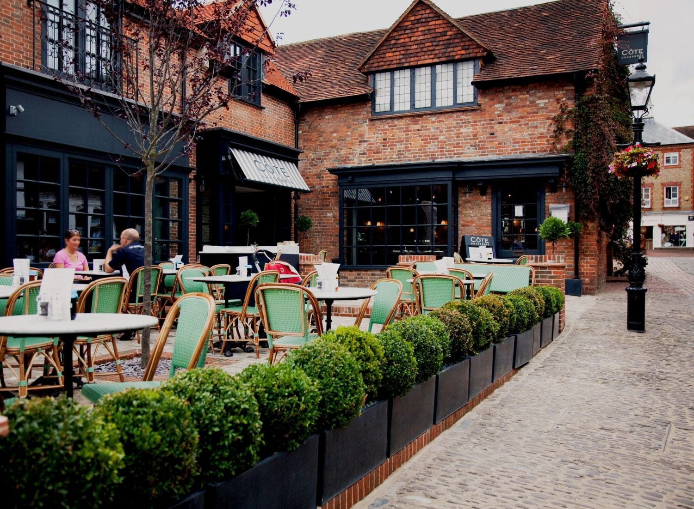
 Cote Brasserie
Cote Brasserie
Inspired by the unmistakable brasseries of Paris, Côte Brasserie is renowned for casual all-day dining and it’s a group of restaurants that certainly knows how to style. Located on Lion and Lamb Way, Côte Brasserie’s Farnham restaurant is the first point of call for locals Click here for a sample menu.
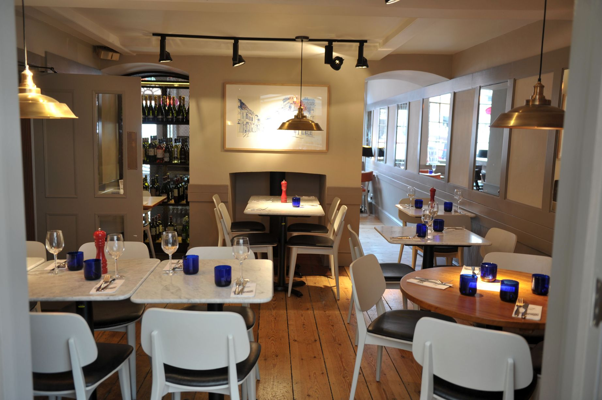
 Pizza Express
Pizza Express
You’ll find us down a cobbled street in the heart of this gorgeous town. We’re inside a listed building, where the front half is Georgian – and the back half is modern. Take a seat in our airy conservatory and watch our pizzaiolos toss dough. Interestingly, Farnham High School for Girls started in one of the rooms upstairs. Click here for a sample menu.
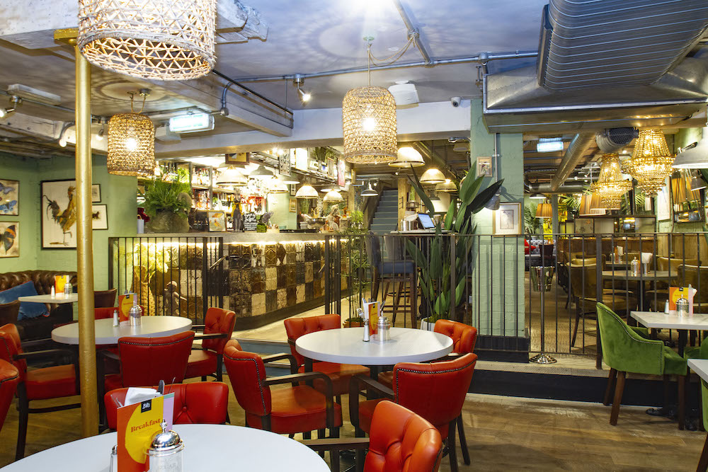
 Bills
Bills
Close to the beautiful Farnham Castle, Bill’s Farnham restaurant is in a pretty location. Bill’s Farnham restaurant is open all day and into the night. Click here for a sample menu.
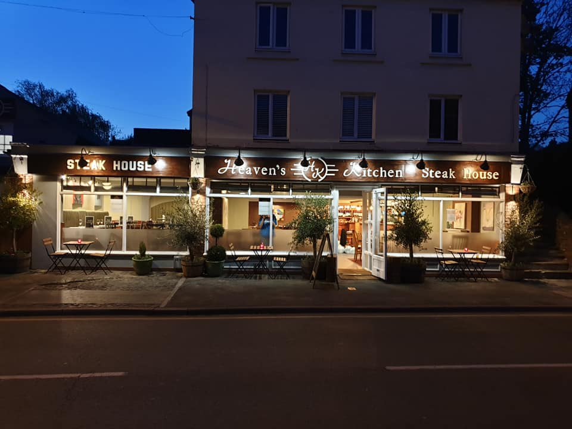
 Heavens Kitchen
Heavens Kitchen
Whether you enjoy steaks, chicken, veal, fish or a vegetarian risotto or pasta, we are very proud of our food and hope that you enjoy it as much as we do. Take advantage of our Steak nights or bring your family and friends for a Sunday roast Click here for a sample menu.
Pubs and Bars
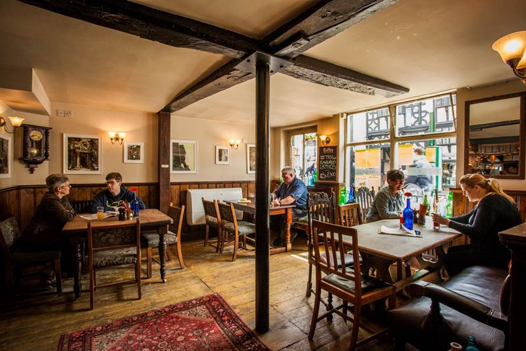
 The Queens Head
The Queens Head
We could probably use a bigger trophy cabinet around here. The Queen’s Head won the Griffin Trophy Outstanding Achievement award in 2010, the Griffin Trophy in 2011, Griffin Trophy Best Town Pub Runner-up 2013 and now a Trip Advisor Certificate of Excellence in 2014!
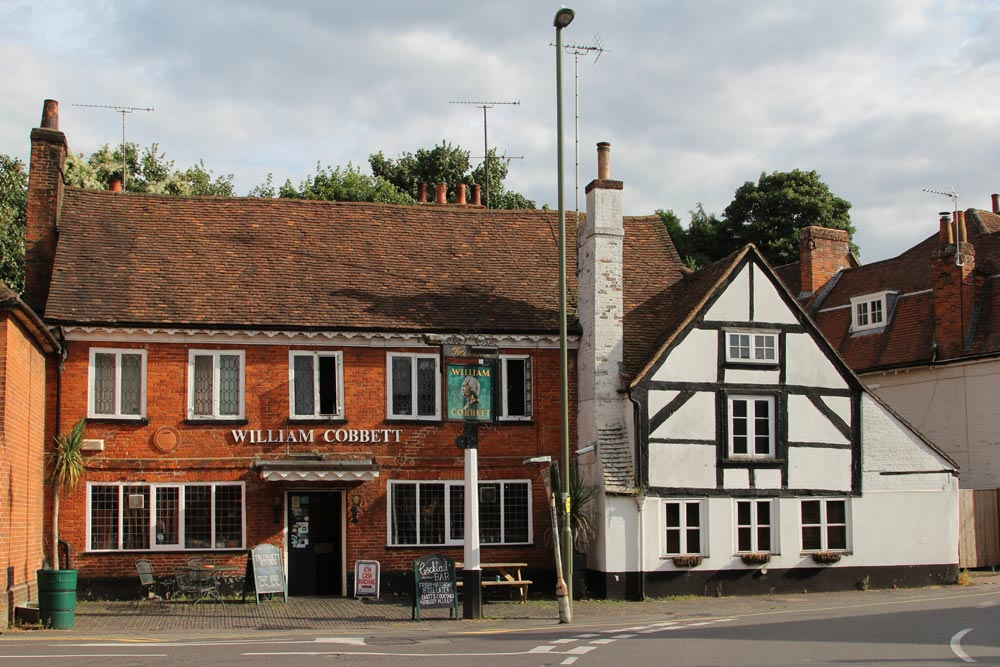
 The William Cobbett
The William Cobbett
An eclectic mix of 1960’s and 1970’s memoribilia. A dart, atmospheric interior with exposed original brickwork and wooden beams. A pet tarantula lives in a terrarium above the fireplace. The floor is mainly flagstones. There is a separate pool room upstairs and the pub benefits from a large sheltered back garden. It ia a lively pub, often frequented by young people in the evening and at weekends and can become crowded and noisy.
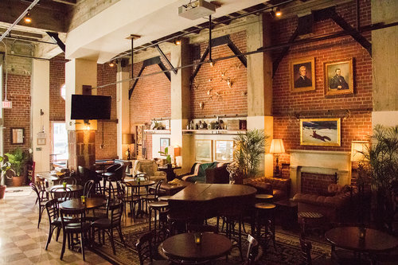
 The Lost Boy
The Lost Boy
Everyone is welcome at the Lost Boy, whatever the occasion; a pint with friends, a relaxed meal out or simply some fresh air in the garden. Parties are well catered for too. Whether it’s a classic buffet for up to 50 people, or something more intimate, we can organise an appropriate space to meet your needs. Superfast, complimentary wi-fi is available throughout the building.
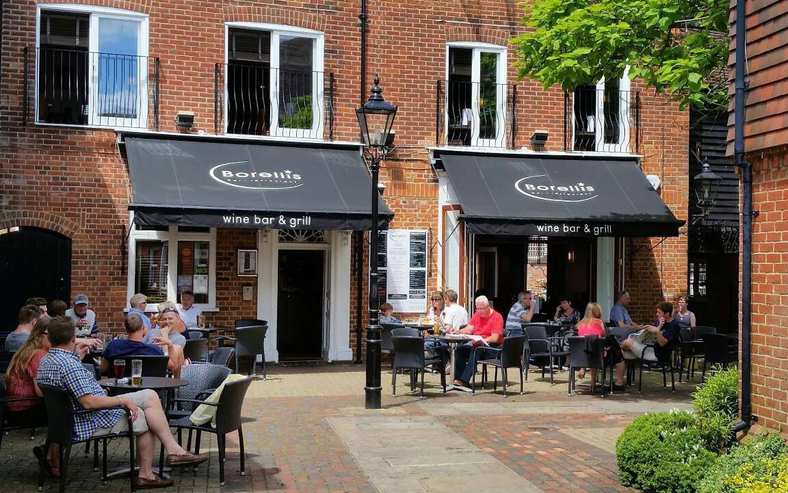
 Borellis
Borellis
Borellis is an independently owned and operated contemporary wine bar and restaurant venue in Central Farnham Town. We are located away from traffic in the quiet historic Borelli Yard with our own courtyard with seating for 50 in the spring and summer.
Coffee Shops
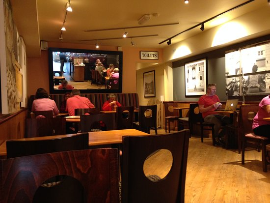
 Costa
Costa
The Costa Coffee story started over 45 years ago with two brothers and just one dream. Since then, a lot has changed, but our values and commitment to serving great tasting coffee hasn't - it's in our DNA.
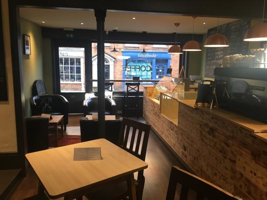
 Barista Lounge
Barista Lounge
We are about offering people the highest quality coffee, teas & food, while also being able to indulge in comfort & style within the heart of Farnham
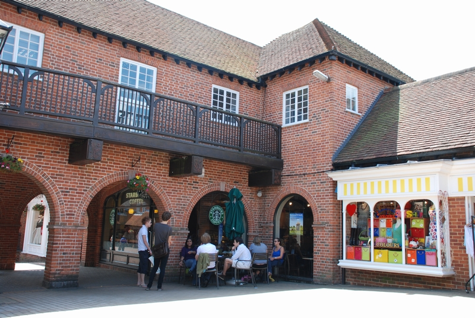
 Starbucks
Starbucks
Across the world we are known as an ethical company. But we know we have to prove this to our customers every single day. From the farms where we buy our coffee to the stores where we make your favourite drink, we work hard to do right by the planet and for the communities we serve.
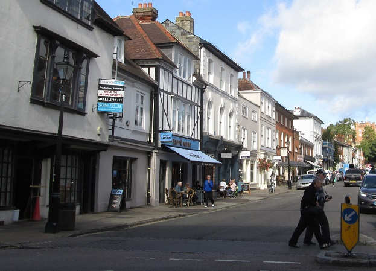
 Caffe Nero
Caffe Nero
We work alongside the Rainforest Alliance to encourage long-term sustainability and are in constant conversation with growers, doing whatever we can to guarantee quality and consistency. Building these relationships takes time and lots of effort, but we think its worth it.